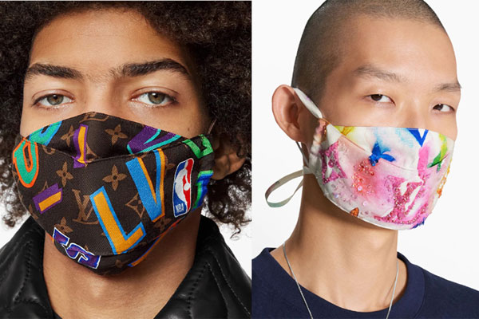

공기가 우리의 삶을 지배할 거라고 상상이나 했나. ‘미세먼지’ 공포에 시달리게 된 2018년의 우리는 아침에 일어나는 순간 ‘창문닫아요’ 앱을 통해 대기 상태를 확인하고, 외출에서 돌아오면 스위스 아이큐에어 공기청정기의 전원을 켠다. 미세먼지 수치가 높아질수록 아파트 놀이터는 텅 비어가고, 서울시는 대중교통 무료 이용 등의 강력한 카드를 꺼내 들었다. 최근에는 중국 지방에서 대형 ‘공기청정기 첨탑’을 가동했다는 뉴스까지 들린다. 패션도 달라졌다. 올해 초 ‘트렌드모니터’라는 리서치 기업은 미세먼지 관련 설문 조사 결과를 발표했다. 성인 1,000명을 대상으로 한 조사는 달라진 우리 일상을 대변하기에 충분했다. 90.5%는 “이제 마스크를 착용하는 것은 일상적인 풍경”이라 답했고, ‘독감(감기 등)에 걸렸다면 당연히 마스크를 착용해야 한다”고 생각한 이들도 92.1%에 달했다. “마스크 사용은 타인에 대한 일종의 배려라 볼 수 있다”라고 답한 비율은 무려 94.5%. 더 이상 마스크를 착용하는 것이 예의에 어긋나거나 유난스럽다고 생각하는 사람들은 실제로 소수(10.5%)다. 그렇게 마스크는 이제 일상적 아이템이 되었다.
